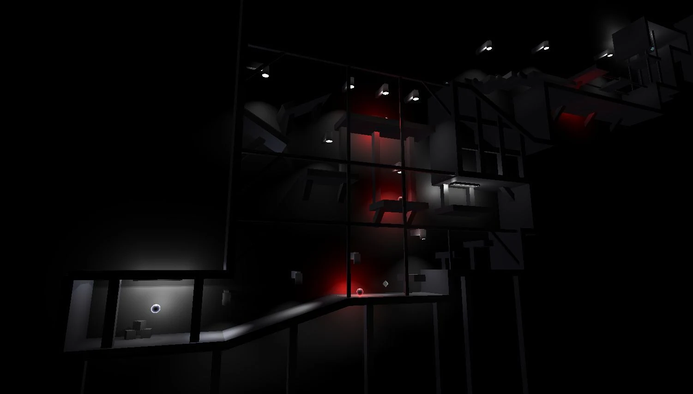
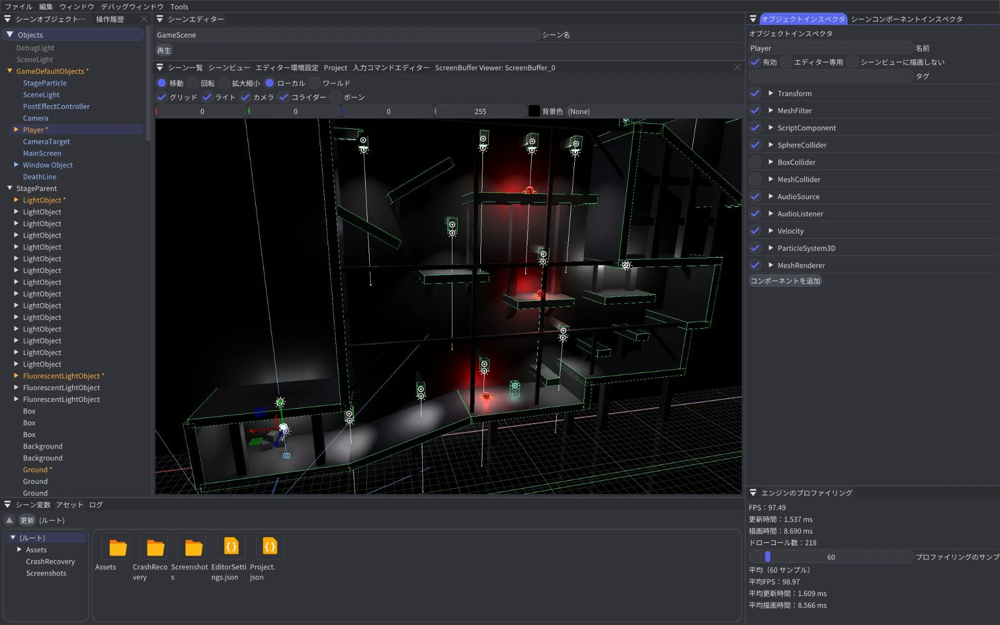
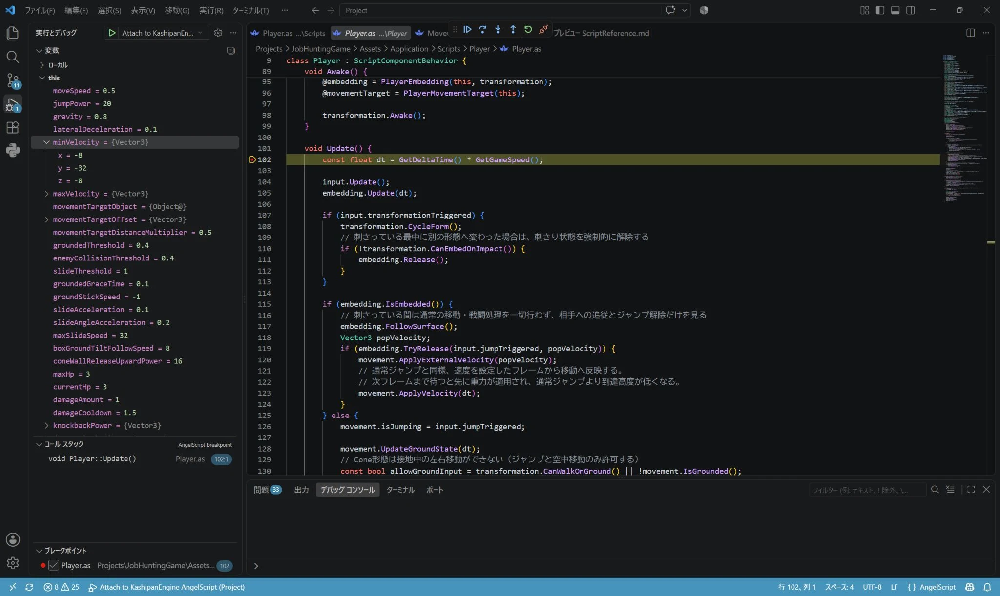

ゲームと制作環境を並行して開発
自由なステージ構成と多数のギミックを実現するため、作品に必要なエディターとスクリプト環境を並行して制作しました。オブジェクトの配置を目で確かめ、パラメーターを調整し、挙動を試すまでの作業を短くすることを重視しています。
WORK 01 / 3年次 / 個人制作
プレイヤーの変身機能や多彩なステージギミックを制作している就活作品です。多くのライトでステージ全体を照らし、細かなアニメーションを加えることで、「見ていて面白い、楽しいゲーム」を目指しています。

PROJECT INFORMATION
| 入力方法 | 対応 |
|---|---|
| キーボード | 対応 |
| マウス併用 | — |
| コントローラー | — |
全作品でキーボード操作に対応。— は対応する操作として掲載していない入力です。
MY CONTRIBUTION
自由なステージ構成と多数のギミックを実現するため、作品に必要なエディターとスクリプト環境を並行して制作しました。オブジェクトの配置を目で確かめ、パラメーターを調整し、挙動を試すまでの作業を短くすることを重視しています。
局所的な陰影で空間ごとの雰囲気を変え、照明だけでなくプレイヤーのアクション、ステージギミック、エフェクトにもライトを活用する方針です。以下では、その表現を支えるForward+の導入と検証を紹介します。
TECHNICAL REPORT / プログラム説明資料
必要な表現から課題を見つけ、
設計と検証につなげる。
通常のフォワードレンダリングでは、描画対象の各ピクセルでライトを参照するため、シェーディングされるピクセル数とライト数に応じて負荷が増えます。過去作相当の128ライトを現在のエンジンで再検証すると120FPS以上を確保できたため、目標を8倍の1024個へ引き上げました。
達成条件は、1024個のBoxメッシュと1024個のライトを配置し、ローカル環境で120FPSを維持することです。実際の比較計測には、半径4のPoint Lightを使った専用テストシーンを使用しています。
フォワードで構築済みの描画パイプラインを活かし、ライトの参照数を直接減らせるタイルカリングを採用しました。ディファードへの全面移行より変更範囲を抑え、効果を先に検証できる点を重視しています。
奥行き方向にオブジェクトが大量に重なる場面が少ないため、深度プリパスの優先度は低いと判断しました。まずタイルカリングだけで目標に届くかを確認する方針です。
Compute Shaderでタイルごとの影響ライトを求めます。
Point / Spot Lightの包含球からビュー空間AABBを計算し、スクリーン空間の外接矩形を求めます。タイルの矩形との重なりを判定し、ライトのインデックスを格納します。
描画先のScreenBufferとパイプラインの組ごとにCPU側からカリングを実行し、結果バッファとシャドウマップを描画パイプラインへバインドします。1タイルあたり最大1024ライトで、Spot Lightは最上位ビットで区別します。
カメラ位置・向き、実行時間、入力なしの状態、ライトの影響範囲と配置パターンを固定しました。タイルカリングの有効／無効を切り替え、ライト数を64・128・256・512・1024と増やしながら、エンジン内プロファイラで描画時間とFPSを記録しています。
KASHIPAN ENGINE / FORWARD+
既存のフォワードレンダリングにタイルカリングを追加。Compute Shaderで画面を16 × 16ピクセルに分割し、各タイルに影響するライトだけを参照するようにしました。
全面的な描画方式の変更を避け、シーン特性に合わせて深度プリパスの導入も見送りました。まず小さな変更で効果を確かめる方針です。
Forward+によるテストシーンでの計測値
描画時間（ms） · 低いほど高速
| ライト数 | Forward（ms） | Forward+（ms） | Forward（FPS） | Forward+（FPS） |
|---|---|---|---|---|
| 64 | 3.356 | 3.114 | 226.72 | 239.83 |
| 128 | 5.854 | 2.990 | 141.20 | 239.13 |
| 256 | 11.073 | 3.195 | 79.17 | 231.07 |
| 512 | 19.111 | 4.201 | 47.82 | 172.90 |
| 1024 | 37.263 | 6.350 | 25.02 | 120.96 |
計測条件：Ryzen 7 7745HX / RTX 4070 Laptop、1920 × 1080、Development（MaxSpeed）、半径4のPoint Light、300フレームの平均。FPSには更新時間も含み、描画時間はエンジン内の描画処理の計測値です。資料記載の結果であり、このページ作成時の再計測ではありません。
制約：深度を使わない保守的な判定のため、遮蔽されたライトも一部含まれます。カリング処理自体の負荷があり、1タイルの格納数は最大1024です。実際の作品シーンでの大量配置の計測は資料時点で今後の予定です。

AUTHORING TOOLS
ヒエラルキー・ビューポート・インスペクター・プロファイラを一つのウィンドウへ。オブジェクト配置とパラメーター調整を視覚的に行い、コンポーネントの組み合わせでギミックを構成できる設計にしました。

SCRIPTING & DEBUGGING
C++に近い構文を持つAngelScriptを統合。ScriptComponent、型バインディング、SerializeFieldによるインスペクター連携を実装しました。VSCodeと連携し、ブレークポイントや変数の確認にも対応しています。
資料記載の制作例：6個のギミックを5日間で実装。C++との実行速度比較は未計測です。
Forward+タイルカリング、コンポーネントシステム、エディター、AngelScript統合、VSCode連携のスクリプトデバッガー、Bloom・FXAAなど15種類のポストプロセスは、資料時点で実装・動作確認済みです。
今後の検討項目は、AngelScriptとC++の実行速度比較、必要に応じた深度プリパスの導入、実際の作品シーンで数百〜数千のオブジェクトとライトを配置した際の計測です。
シーン特性に合わせて導入範囲を選ぶ重要性を学びました。Compute Shaderによる事前計算は、パーティクルなど他のGPU処理への応用も検討しています。
プログラム説明資料の原本を開く（新しいタブ）